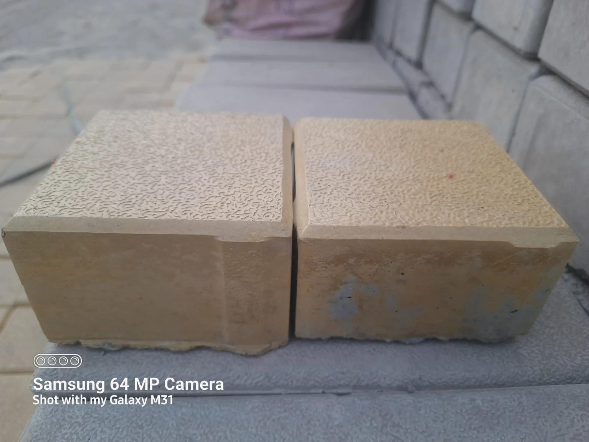

Walk through a nicely landscaped courtyard and you’ll often notice paving that looks almost hand-laid, with soft edges, a faint pattern and a surface that reminds you of stone or cobble. Many of those floors are made with Rubber Mould Finishing Pavers. The name comes from how they’re cast. Instead of a rigid steel mould, the concrete is poured into flexible rubber, and the rubber leaves its pattern on the block. The result is a paver with character, and that’s why designers like it so much. If you’re planning a driveway, a garden or an entrance, the finish is worth understanding before you order.
A rubber mould paver is a precast concrete block with a decorative, patterned finish. People choose it for driveways, courtyards, garden paths, plazas and building entrances, anywhere the paving is meant to be seen and enjoyed.
Rubber mould pavers are made by casting concrete in moulds made of rubber. The rubber can carry almost any design: a cobblestone look, a wavy edge, a stamped texture or a classic interlocking shape. When the concrete sets and the block is lifted out, the pattern is part of the surface. It isn’t painted or stuck on, so it doesn’t peel or wash away.
Because the blocks are precast, every piece comes out the same size and shape. Laid together, they form a firm surface with a finish that looks far more interesting than plain grey paving. Here’s what the term covers:
-
The block: A precast concrete paver, made to a consistent size so it fits neatly beside its neighbours.
-
The mould: A flexible rubber mould that carries the pattern or texture.
-
The finish: A decorative top face. It can resemble cobble, stone or a stamped design.
-
The look: Rich and varied, with more depth than a flat, plain block. Light and shadow play across the pattern through the day.
-
Other finishes: Short blast, matte and rough pavers give different looks, so compare samples side by side before choosing.
Plain pavers do the job, but they rarely make anyone look twice. A rubber mould finish changes that without making the paving harder to lay or maintain. If you’re weighing options, these are the points that usually settle it:
-
A decorative look: The pattern gives paving a designed feel, even in a simple layout. A plain rectangle of paving suddenly looks planned.
-
Texture underfoot: The patterned surface adds a little grip and a pleasant feel.
-
Lots of design choice: Rubber moulds can carry many patterns, so you can match a style or theme, whether classic, rustic or modern.
-
Hides small marks: Pattern and texture make scuffs and dust less obvious, so the paving looks cared for even between cleanings.
-
Easy to lay: Pavers go down block by block, and any single piece can be lifted and replaced.
-
Suits many settings: Homes, resorts, gardens and public spaces all use decorative paving.
-
Low upkeep: No sealing or painting is needed. A broom and the occasional wash is enough.
Rubber mould pavers belong in places where looks matter as much as strength. Sun, rain and daily traffic all test a surface, so it helps to match the pattern to the place. These are the usual spots:
-
Driveways: Home and commercial driveways that need a smart, welcoming surface.
-
Courtyards and patios: Outdoor rooms where the floor is part of the design, and where people sit, eat and talk for hours.
-
Garden paths: Winding paths and borders that benefit from a softer, patterned look, and a texture that sits well beside plants.
-
Plazas and public spaces: Open areas where paving sets the character of the space.
-
Building entrances: Approaches to hotels, offices and apartment blocks, where first impressions count and visitors notice the details.
-
Pool surrounds and terraces: Decorative areas that need texture as well as style, and where wet feet make grip important.
-
Resort and campus walkways: Long routes where a repeated pattern adds interest and helps guide people along the way.
A few things set a rubber mould paver apart from an ordinary one, and most of them come down to the top face and how it was made:
-
Patterned top face: The design comes from the rubber mould itself, so it stays as long as the block does.
-
Flexible mould casting: Rubber moulds can reproduce fine detail and varied shapes, down to the edges and corners of each block.
-
Precast consistency: Factory-made blocks keep their size and shape from one batch to the next.
-
Interlocking-friendly laying: Pavers fit together tightly to form a firm surface, with joints that can be filled with sand.
-
Concrete strength: Concrete pavers are made for foot and vehicle traffic outdoors, and they’re laid on a prepared base to carry the load.
-
Wide design range: Patterns, edges and shapes vary from one design to the next, so there’s usually something to suit the project.
-
Made in India: Produced for local conditions and projects.
A paving surface should look good on day one and still look good years later. Choosing a finish carefully makes that far more likely, and it saves you from re-doing the work. Here’s what you gain:
-
A standout appearance: The pattern gives a property real character, and that can add to its appeal when it’s time to sell or let.
-
A lasting finish: Pattern and texture hide everyday wear and dirt.
-
Added grip: The textured surface helps feet and wheels hold on, especially after rain.
-
Easy repairs: A damaged block can be taken up and replaced without relaying the whole area, which keeps costs down.
-
Low upkeep: Sweep it, hose it down and move on. There’s no polishing and no resealing.
-
Flexible design: The finish works with many layouts, so you can lay straight lines, curves or borders.
-
Value for money: A decorative look at a sensible price, without the cost of natural stone, and with the same easy laying as any paver.
It’s a precast concrete paver cast in a flexible rubber mould, so the top face carries a decorative pattern or texture. The pattern is part of the block, not a coating.
Concrete pavers are made for outdoor foot and vehicle traffic, and driveways are a common use. For heavy or frequent vehicle loads, tell your supplier about the traffic so the right product is recommended.
Driveways, courtyards, garden paths, plazas, building entrances, pool surrounds and walkways all suit this finish. It works for homes and public spaces alike.
Short blast, matte and rough finishes each give a different surface. Rubber mould adds a decorative pattern, so ask for samples and compare them in daylight.
Share the area to be paved, the type of traffic and the look you want. Ask about the sizes, thicknesses, patterns and colours available, because these vary by product. A site photo and a rough area measurement will speed things up.